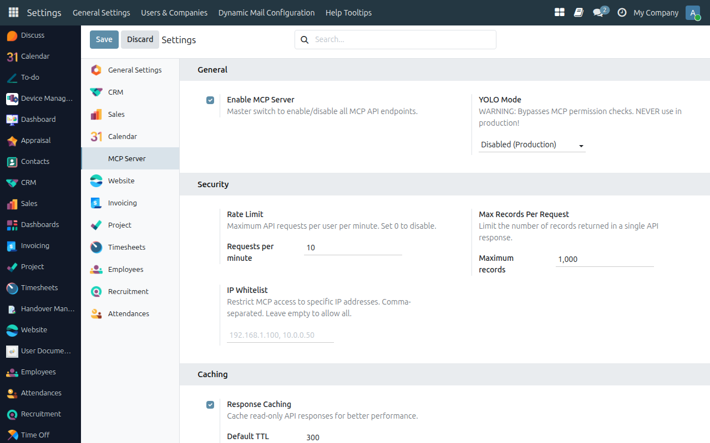
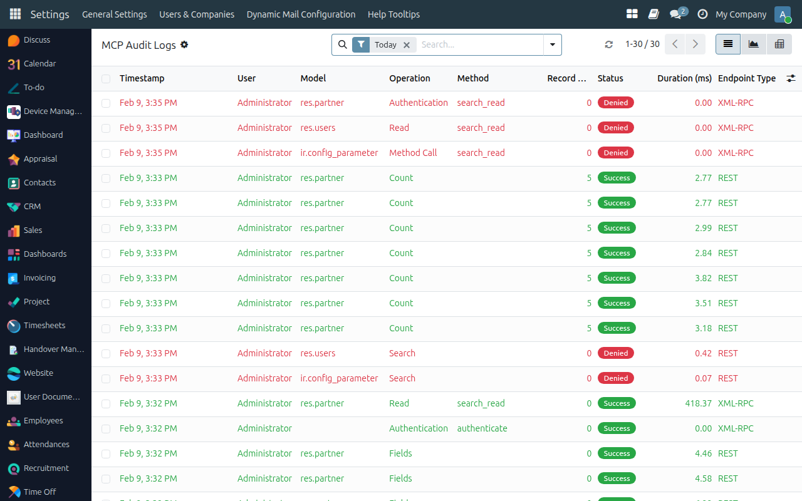
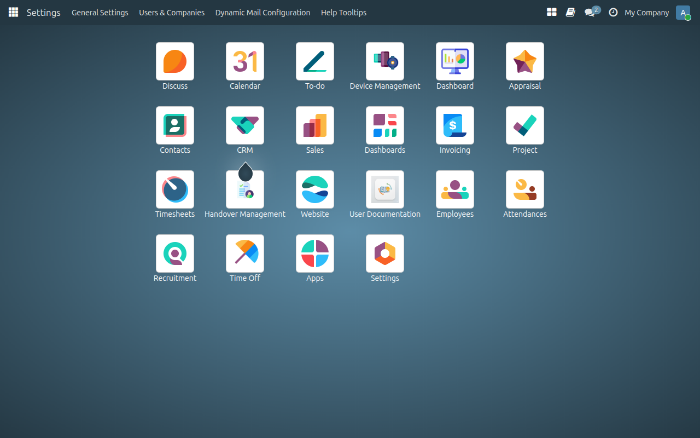

Setup Guide
Configure MCP Server in 5 easy steps
Install & Enable MCP Server
After installing the module, go to Settings and click MCP Server in the left sidebar. Toggle the switch to enable MCP Server. You can also configure rate limits, IP whitelist, caching, and audit logging here.

Add Models to Expose
Navigate to the MCP Model Access list. Here you can see all currently exposed models with their permissions. Click New to add a model.

Configure Model Permissions
In the model form, select the Odoo model to expose (e.g., Contact / res.partner). Toggle the CRUD permissions: Read, Write, Create, Delete. You can also set:
• Allowed Fields — JSON list of fields to expose (empty = all fields)
• Cache TTL — Cache duration in seconds for read operations
• Allowed Groups — Restrict access to specific user groups
• Notes — Description for documentation purposes

Generate API Key
Go to your user profile and navigate to the API Keys tab. Click New API Key, give it a description, and set the scope to rpc. Copy the generated key — you'll need it to configure your AI client.
Monitor with Audit Logs
Every MCP API call is automatically logged. View logs in list format or switch to graph/pivot view for analytics. Logs capture user, IP, model, operation, status (success/error/denied), and response time.

Audit Analytics (Graph/Pivot View)
Switch to the graph or pivot view to analyze API usage patterns — see which models are most accessed, error rates, and performance metrics over time.
